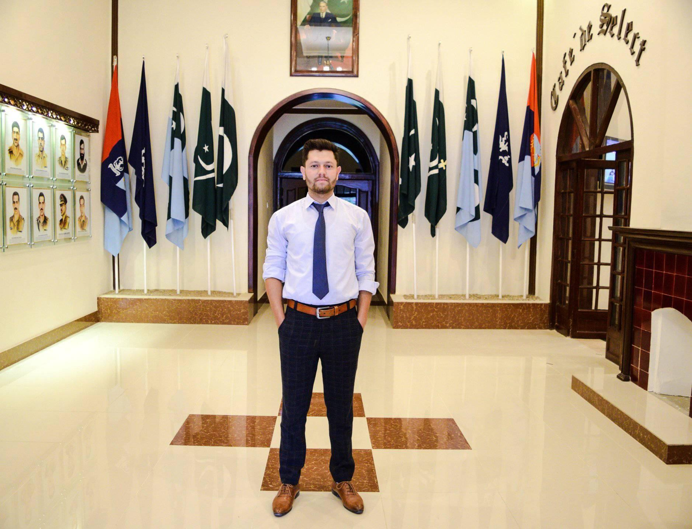

Artificial Intelligence
Artificial intelligence, machine learning, deep learning, and intelligent systems.
SOFTWARE ENGINEERING · AI · MACHINE LEARNING
I'm Muhammad Suhail, a Software Engineering graduate from Karakoram International University with interests spanning artificial intelligence, machine learning, deep learning, computer vision, NLP, and software systems.

I am a Software Engineering graduate with a strong interest in combining software development with practical artificial intelligence. My academic work included a comparative computer-vision thesis, while my professional experience has covered software development, digital marketing, Amazon virtual assistance, and teaching.
I enjoy learning new technologies, conducting research, collecting and analyzing information, and contributing to collaborative projects. My broader technical interests include intelligent systems, data science, cybersecurity, networks, cloud computing, databases, operating systems, software reliability, reengineering, HCI, and signal processing.
My research interests are broad, with a central focus on artificial intelligence and intelligent software systems.
Artificial intelligence, machine learning, deep learning, and intelligent systems.
Computer vision, image processing, visual detection, and practical AI applications.
Natural language processing, data science, data mining, and information analysis.
Software development, reliability, reengineering, operating systems, networks, and cloud computing.
Information security, cybersecurity, Internet of Things, and connected systems.
Human–computer interaction and signal processing as complementary areas of interest.
Conducted a comparative study of YOLOv3 and SSD-MobileNet for person detection and social-distance monitoring in video data, evaluating detection accuracy, speed, and effectiveness in identifying social-distancing violations.
Developed a social-distancing monitoring application using Python as part of professional development work.
Contributed as a team member to the development of an LMS project at IT Park Gilgit.
GB IT Technology · Gilgit, Pakistan
Handled social media marketing across Facebook, Instagram, LinkedIn, and Twitter.
GB IT Technology · Gilgit, Pakistan
Worked on product hunting and A-to-Z account management.
GB IT MCAM · Gilgit, Pakistan
Developed a social-distancing monitoring app using Python and contributed to an LMS team project at IT Park Gilgit.
Euro Kids School Danyore · Gilgit, Pakistan
Taught Mathematics and Computer Science.
Al-Mustafa School & College / KIMS Public School · Gilgit
Taught Mathematics, English, and Computer Science.
Karakoram International University, Gilgit, Pakistan
March 2018 — June 2022 · CGPA 3.54 / 4.00Comparative study of YOLOv3 and SSD-MobileNet for person detection and social-distance monitoring.
Computer Vision · Video Data · Detection PerformancePython · C · C++ · Java · Object-Oriented Programming
HTML · CSS · Web Development
Artificial Intelligence · Machine Learning · Deep Learning · Computer Vision · Image Processing · Data Collection · Data Mining
Research · Analytical Skills · Teamwork · Social Media · Microsoft Office · Flexible Learning
Participated in sessions covering robotics and AI, machine vision and machine learning, multimedia, and human–computer interaction.
July 2019 · GilgitReceived a need-based scholarship from Karakoram International University supporting undergraduate studies.
May 2020 · Karakoram International UniversityVolunteered in a community awareness campaign, helping educate students and the public and distributing awareness materials.
August 2021 · GilgitCompleted an online non-credit graphic-design course authorized by Virtual University and offered through DigiSkills.
October 2022LET'S CONNECT
For academic, research, software, or professional opportunities, feel free to get in touch.
Replace the LinkedIn and GitHub links in index.html with your personal profile URLs.